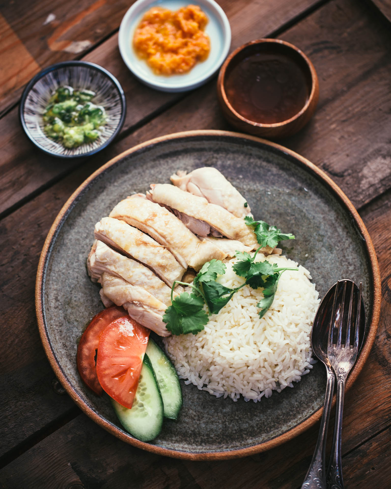

Chicken Rice

Ingredients
For the chicken
- 1 whole chicken
- fresh ginger
- garlic
- green onion
- sesame oil
- salt
For the rice
- cooking oil
- shallot
- garlic
- uncooked rice
- sesame oil
- chicken poaching broth
Steps
-
Boil a large pot of water. In the meantime, clean the chicken by
exfoliating with kosher or coarse salt. Rinse chicken well, inside
and outside.
-
PRE-BOIL CHICKEN: When water is at a hard boil, add the chicken.
Return to hard boil, let scum come to the surface. Boil for 5 minutes.
Discard all the water, including the scum.
-
Refill pot with clean water to cover the chicken by 1-inch, and add
in the garlic, green onion and ginger. Bring the pot to a boil over
high heat, then immediately turn the heat to low to keep a simmer.
Cook for about 30 minutes more (less if you're using a smaller chicken). Check for doneness by sticking a chopstick into the flesh under the leg and see if the juices run clear or insert a thermometer into the thickest part of the thigh not touching bone. It should read 160F. The chicken will continue to cook to 165F during rest.
-
When the chicken is cooked through, turn off the heat and remove the
pot from the burner. Immediately lift and transfer the chicken into
a bath of ice water to cool. The quick cooling will stop the cooking
process, keeping the meat soft and tender, and giving the skin a
lovely firm texture. After cooling, pat the chicken dry with paper
towels and rub the sesame oil all over the chicken. This will help
prevent the chicken from drying out.